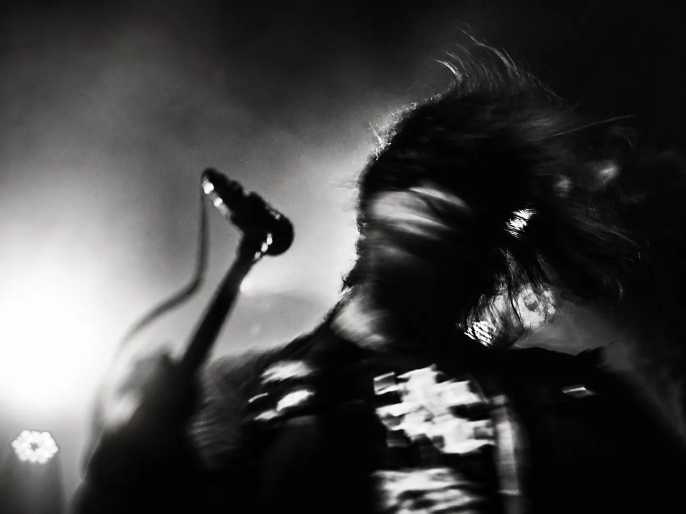

Território
Movimento.
Comunidade, disputa e memória.
ANIM4LL / presença com olhar
Eu organizo imagem, texto, WhatsApp e página para o cliente entender, confiar e chamar.
Seleção visual
Movimento, atmosfera e assinatura: três caminhos do olhar presentes no acervo.
Território
Comunidade, disputa e memória.

Cultura
Gesto, sombra e intensidade.
Universo
Imagem, pensamento e direção.
Seleção do acervo disponível. Contextos e créditos dos projetos estão em revisão.

O olhar / ANIM4LL
A ANIM4LL nasce desse lugar: observar ruído, gesto, falha, excesso e transformar isso em presença compreensível.
Antes de vender mais, muita marca precisa ser percebida melhor.
Clareza / direção
Passa confiança e mostra o que importa?
Explica o que você faz com clareza?
Oferece um caminho simples para conversar?
Ajuda o visitante a encontrar o que procura?
Vamos conversar
Quer organizar sua presença com mais direção? Conte ao Felipe o que você faz e o que precisa comunicar.
Conversar pelo WhatsApp